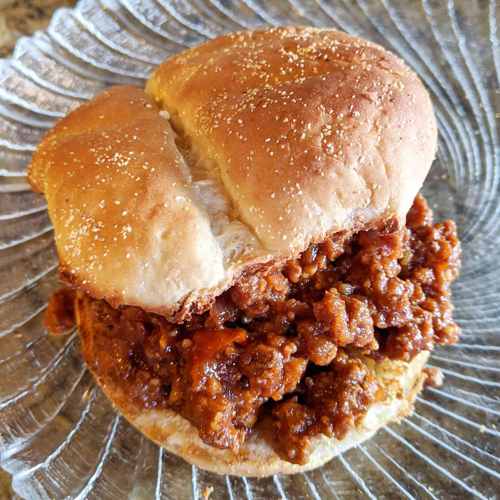

Sloppy Joes

Oh reader, prithee, attend to mine words and let me extol the glories of a dish most delicious and savory,
a meal fit for a king, nay, fit for a god.
A Sloppy Joe, with its rich and tangy sauce, its juicy and succulent meats, and its soft and tender buns,
shall satiate thy hunger and tantalize thy taste buds.
The harmony of flavors, the balance of textures, the sheer ecstasy of each and every bite shall bring thee to a state of culinary rapture.
So come, partake of this simple yet divine repast, and know the true meaning of culinary delight.
Ingredients
- One pound of lean ground beef, of the finest quality
- A quarter cup of onion, chopped with care
- A quarter cup of green bell pepper, chopped with artistry
- Three-quarters of a cup of ketchup, or more if thou desirest
- One tablespoon of brown sugar, or to thy taste
- One teaspoon of yellow mustard, or as much as thou wisheth
- Half a teaspoon of garlic powder, to add depth to the flavor
- Salt and black pepper, to balance the taste
- Six hamburger buns, split, to be thy bread most perfect.
Oh reader, heed these instructions most carefully, for they shall guide thee in thy journey towards a culinary masterpiece.
These are the steps to create the dish, most delectable and delightful.
Steps
- Heat thy large skillet o'er medium flame, and let the lean ground beef sizzle and cook.
Stir it with care, until the fat dost render and crisp, three to four minutes shall suffice.
Then add the chopped onion and bell pepper, let them soften and mingle with the beef, until all is cooked through, three to five minutes more.
- Stir in the ketchup, brown sugar, yellow mustard, and garlic powder, and season with salt and pepper most judiciously.
Reduce the heat to low and let the flavors mingle and meld, simmering for twenty to thirty minutes.
- Divide the meat mixture most evenly amongst the hamburger buns, let each bite be filled with flavor and succulence.